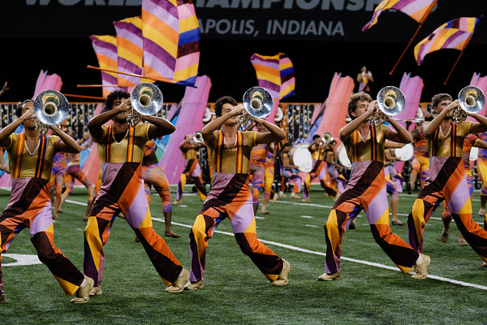

| Jack Alexander Feen | |
|
Feen in 2025
| |
| Born | Austin, Texas, U.S. |
| Nationality | American |
| Education | University of Texas at Austin (MS) University of Texas at Dallas (BS) |
| Occupation | Product Manager at IBM |
| Known for | IT product management, AI engineering, NLP research, investment analytics |
| Academic career | |
| Fields | Product Management Business Analytics Financial Analytics Artificial Intelligence |
| Institutions | McCombs School of Business Jindal School of Management |
| Online presence | |
| Website | jackfeen.github.io |
| linkedin.com/in/jackafeen/ | |
| jaf5542@my.utexas.edu | |
Jack Alexander Feen is an American product manager, data scientist, and researcher based in Austin, Texas. He currently serves as a Product Manager at IBM in San Jose, California. Feen's work spans machine learning, natural language processing, and quantitative finance.[1]
Feen holds a Master of Science in Business Analytics with a Financial Analytics concentration from the McCombs School of Business at the University of Texas at Austin, and a Bachelor of Science in Business Analytics and Artificial Intelligence from the Naveen Jindal School of Management at the University of Texas at Dallas, where he graduated Summa Cum Laude.[2]
Feen enrolled at the University of Texas at Dallas (UTD), where he pursued a Bachelor of Science in Business Analytics and Artificial Intelligence at the Naveen Jindal School of Management. He graduated in May 2025 with a cumulative GPA of 3.94, earning the distinction of Summa Cum Laude. During his undergraduate studies, he was awarded the Ann and Jack Graves Foundation Scholarship and the Academic Excellence Scholarship.[2]
His undergraduate coursework included machine learning, big data infrastructure, optimization, and corporate finance. He also completed the IBM Professional Data Science certification during this period.[3]
In 2025, Feen began his Master of Science in Business Analytics at the McCombs School of Business, University of Texas at Austin, with a concentration in Financial Analytics. He maintained a GPA of 3.74 and completed the program in May 2026.[2] His graduate work concentrated on data science, empirical asset pricing, natural language processing applied to financial texts, and the development of portfolio management systems.
In the summer of 2024, Feen interned as an eCommerce Analyst at Lennox International in Dallas, Texas. His work focused on identifying and resolving data pipeline failures between SAP ECC and the company's Hybris e-commerce platform, a project that affected over 10,000 product listings. He reduced the clearance center update process time by 75% through the creation of VBA automations and revisions to standard operating procedures.[4]
Feen also established and managed an Amazon Brand Registry account for Lennox, successfully removing counterfeit product listings by authenticating trademarks and partnering with authorized resellers for third-party monitoring.[4]
From May to August 2025, Feen served as a Business Analyst Intern at EssilorLuxottica's Helix division in Austin, Texas. He developed an employee bandwidth assessment framework that enabled a 15% increase in customer volume capacity. He designed a SQL database for tracking over 10,000 records of accounts receivable, aging goals, and support ticket benchmarks, and created HubSpot and Excel dashboards reporting key performance indicators for Revenue Cycle Management directors.[5]
From January to May 2026, Feen worked as an Investment Strategy Researcher at Vise, a portfolio management technology firm based in New York. In this role, he built a rules-based portfolio rebalancing engine in Python incorporating drift thresholds, tax-loss harvesting logic, and lot disposal strategies including FIFO, LIFO, and tax-optimal methods.[6]
Feen developed a simulation and backtesting framework to evaluate rebalancing triggers and tax-loss harvesting effectiveness. He also created a Streamlit user interface enabling financial advisors to simulate portfolios and visualize drift, returns, and rebalancing trades in real time.[6]
Beginning in July 2026, Feen joined IBM as a Product Manager at their San Jose, California office.[7]
In early 2026, Feen engineered a Connect Four artificial intelligence system by generating one million game positions using Monte Carlo Tree Search (MCTS) for move selection. He trained both a Convolutional Neural Network (CNN) and a Transformer architecture on this dataset using Python and TensorFlow to select optimal moves.[8]
The project was containerized using Docker and deployed on AWS Lightsail with a web-based front-end interface, allowing users to play against the trained model in real time.[8]
In late 2025, Feen built Dwelling, an apartment recommendation engine that allowed users to search for housing based on neighborhood sentiment and nearby features. The system combined data from the Google Maps API with web-scraped content from Reddit and Apartments.com. It used word embeddings for feature identification, combined with distance and sentiment modifiers to produce a composite score for each listing.[9]
As part of his capstone research at UT Austin, Feen studied the phenomenon of "blame-shifting" in earnings call transcripts — the hypothesis that firms disproportionately deploy macroeconomic language to deflect responsibility for poor financial performance. The research involved a corpus of approximately 60,000 earnings call transcripts spanning 2010 to 2024.[10]
Feen developed a custom macro-language dictionary organized into thematic categories and built an end-to-end NLP pipeline using FinBERT fine-tuned on data labeled through weak supervision via Llama-based large language models. The pipeline incorporated TF-IDF scoring, Fama-French industry classification, and a cumulative abnormal return (CAR) event study methodology to measure market-level effects of blame-shifting behavior.[10]
Feen co-developed a ETL pipeline for Steam video game analytics using Snowflake. The system employed a three-layer architecture — raw, transformed, and aggregated — to convert semi-structured gaming data into interactive analytical dashboards. The project also integrated AI-powered natural language querying via Snowflake Cortex, allowing users to ask questions about the data in plain English.[12]
Feen provided consulting services for Juris Law, a Mozambican legal rights mobile application. He developed a scalable non-profit business model projecting $200,000 in yearly cash flows and constructed a market entry strategy for Zimbabwe, comparing legal frameworks across jurisdictions and analyzing effective marketing initiatives for the region.[13]
Feen founded and served as president of the Society of Sustainable Business at UT Dallas from October 2023 to May 2025. Under his leadership, the organization launched impactEarth, UTD's first sustainability entrepreneurship competition, securing over $5,000 in sponsorships. The organization engaged more than 400 students through volunteering initiatives and educational events, including community clean-ups and speaker series. Feen oversaw a seven-officer board and more than 50 active members.[11]
| Year | Award | Notes |
|---|---|---|
| 2025 | Summa Cum Laude | University of Texas at Dallas |
| 2023, 2024 | Ann and Jack Graves Foundation Scholarship | UTD merit-based scholarship |
| 2022 - 2025 | Academic Excellence Scholarship | UTD merit-based scholarship |
| 2025 | National Collegiate Consulting Championship | 2nd place |
| 2025 | Dean's Cup | 1st place |
| 2025 | President's Volunteer Service Award | National recognition |
Feen's technical stack includes Python (with libraries such as Pandas, NumPy, PyTorch, and TensorFlow), R, Java, SQL, and advanced Microsoft Excel. He has experience with Snowflake, SAP, HubSpot, Hadoop, Tableau, IBM Cognos, and Azure DevOps.[3]
This is the talk page for discussing the subject of this article. To contact Jack Feen directly, use the methods below.
Thanks for visiting my personal page! Outside of my professional work, I am a musician and travelor. I've been playing the French horn since I was 11, and over time expanded to instruments like piano and trumpet. Fun fact: I spent my 2 summers performing with the Bluecoats Drum and Bugle Corps during my early college years.
French horn has been my primary instrument for over a decade. I've performed with various ensembles and have a deep appreciation for both classical and contemporary brass music.

My favorite part of traveling is getting to connect with new cutlures around the world. Below are some of my favorite places I've visited, with some photos highlighting special moments.
(Click a marker to view a photo and location name.)